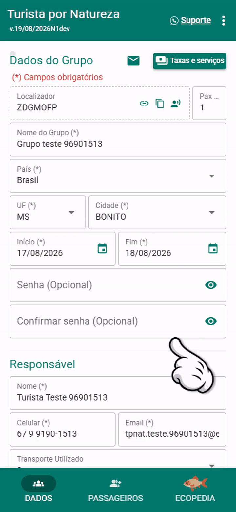
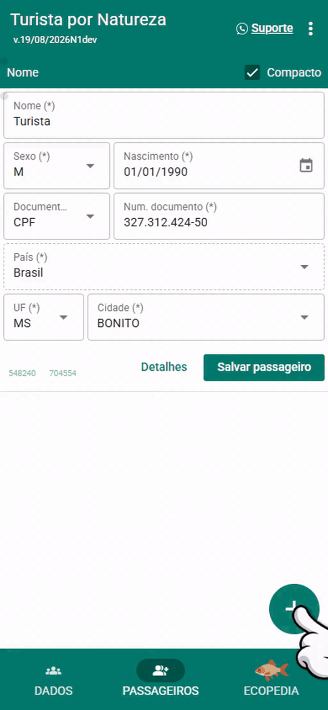
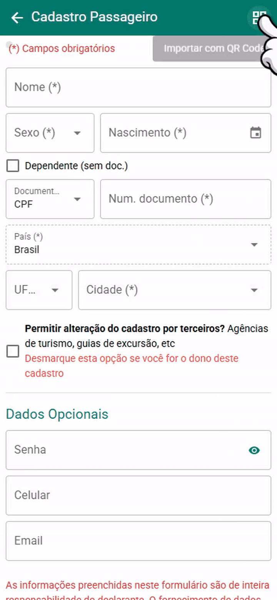

Passo 1 de 3
Abra Passageiros

- Entre no grupo.
- Na barra inferior, toque em Passageiros.
Para quem éUse este fluxo para trazer alguém que já tem cadastro no Turista por Natureza.
Turista por Natureza · importe quem já tem cadastro
Música: sakuracloud — miffy cafe [NCS Release]
Passo 1 de 3
Passo 1 de 3

Para quem éUse este fluxo para trazer alguém que já tem cadastro no Turista por Natureza.
Passo 2 de 3

Se o cadastro já existirO app pergunta se quer importar os dados. Informe o primeiro nome e toque em Sim. Depois confira e salve.
Passo 3 de 3

Onde está o QRNo cadastro da pessoa: menu de três pontinhos e depois QR Code. Também vale a carteirinha.
Guia concluído
Há dois jeitos de trazer alguém que já tem cadastro: ler o QR Code ou informar o documento e confirmar a importação.
Outro caminhoPelo documento: preencha o número, saia do campo, confirme o primeiro nome e toque em Sim. Dependente sem documento não entra por esse caminho.
Música: sakuracloud — miffy cafe [NCS Release]